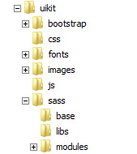

Template Documentation
- Rahisi Themes
 FEB 2015
FEB 2015
Using the UI Kit
This theme's uikit was designed to be both reusable and portable. In the root of this theme is a folder named uikit. This directory contains all of the required stylesheets and scripts that make up the kit. The latest bootstrap release is also contained in the uikit directory.
The kit contains instructions on setup and usage. You can explore the uikit here
Developing on Google chrome
Google chrome by default restricts some ajax functions when working with local files. Thus if you choose to develop with chrome then you need to turn off these restrictions. These restrictions DO NOT APPLY on HOSTED sites.
To turn off these restrictions do one of the following:
1. Using windows command prompt
- Go to start and type cmd in the search bar to launch the command prompt
- Type the following: start chrome --allow-file-access-from-files
- Press enter. Chrome should start with the restrictions turned off
2. Editing the chrome shortcut
- On windows, find chrome's shortcut icon, right click it and choose properties
- Find the target text box and add the following at the end of the existing entry --allow-file-access-from-files
- Thus the entry should look something like this: "C:\Program Files\Google\Chrome\Application\chrome.exe" --allow-file-access-from-files
- Click apply and save.
- Now whenever you click this shortcut, chrome will be launched with the --allow-file-access-from-files switch
3. Applying the switch on Macs
The same applys on devices running Apple's OS. Just lauch chrome from the console using the same switch i.e
open -a 'Google Chrome' --args -allow-file-access-from-files
Developing on Firefox and other browsers
Other browsers do not have similar security restrictions and you should not experience any difficulties. Always remember that DO NOT APPLY on HOSTED sites, even those running on chrome.
Using Bootrap
Please refer to the official bootstrap documentation on getbootstrap.com
Image Credits
The images used in this theme are licenced for free use and were sourced from the following websites.
- http://www.flickr.com/photos/dmsumon/sets/
- http://www.flickr.com/photos/anothervision21/
- http://www.flickr.com/photos/danrocha/
- www.flickr.com/photos/yuri_samoilov/
- http://www.flickr.com/photos/ivanmcclellan/
- http://www.flickr.com/photos/72213316@N00/
- www.pixabay.com/
The mockup screens were generated using free templates from http://www.pixeden.com/free-graphics
Script and Other credits
The following icon sets and jquery plugins were used and are licensed for commercial use
- Font icons from FontAwesome
- Image box plugin by PrettyPhoto
- jQuery by The jQuery Foundation
- Bootsrap 3 by Twitter Team
- BxSlider from bxslider.com
- Portfolio plugin by Quicksand
Asset Help and Documentation
Visit their respective host sites for more documentation.